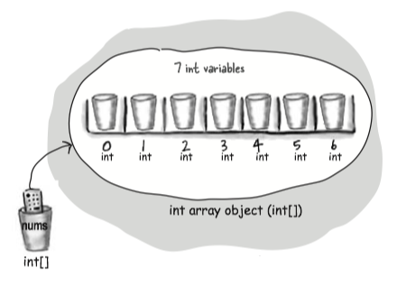

Chapter 3 Primitives and references¶
Variables must always be declared with a name and a type. Variables come in two flavors: primitive and reference.
Variables can be used in many places:
- as object state: instance variables
- variables declared within a method: local variables
- values sent to a method by the calling code: arguments
- values sent back to the caller of the method: return types
Naming¶
You can name a class, method, or variable according the following rules (the real rules are sightly more flexible, but these will keep you safe:
- It must start with a letter, underscore (_), or dollar sign ($). You can’t start a name with a number.
- After the first character, you can use numbers as well. Just don’t start it with a number.
- It can be anything you like, subject to those two rules, just so long as it isn’t one of Java’s reserved words.
Primitive Variable¶
A primitive variable value is the bits representing the value.
- Primitives hold fundamental values.
- Each primitive variable has a fixed number of bits.
Reference variable¶
- A reference variable value is the bits representing a way to access an object on the heap.
- The only way you can access an object is through a reference variable.
- It doesn’t hold the object itself, but it holds something like a pointer. Or an address.
- A reference variable is like a remote control. Using the dot operator(
.) on a reference variable is like pressing a button on the remote control to access a method or instance variables. - A reference variable has a value of
nullwhen it is not referencing any object.
The three steps of object declaration, creation and assignment.
(e.g. Dog myDog = new Dog());
- declare a reference variable: tell the JVM to allocate space for a reference variable, and names that variable myDog
- create an object: tells the JCM to allocate space for a new Dog object on the heap.
- Assigns the object to the reference variable.

The size of reference variables: All references for a given JVM will be the same size regardless of the objects they reference, but each JVM might have a different way of representing reference, so references on one JVM may be smaller or larger than references on another JVM.
Array¶
An array is like a tray of cups:
- Declare an int array variable. An array variable is a remote control to an array object.
int[] nums; - Create a new int array with a length of 7, and assign it to the previously-declared int[] variable nums.
nums = new int[7]; - Give each element in the array an int value.
nums[0] = 6;

- An array is always an object, even if the array is declared to hold primitives.
- Every element in an array is just a variable.